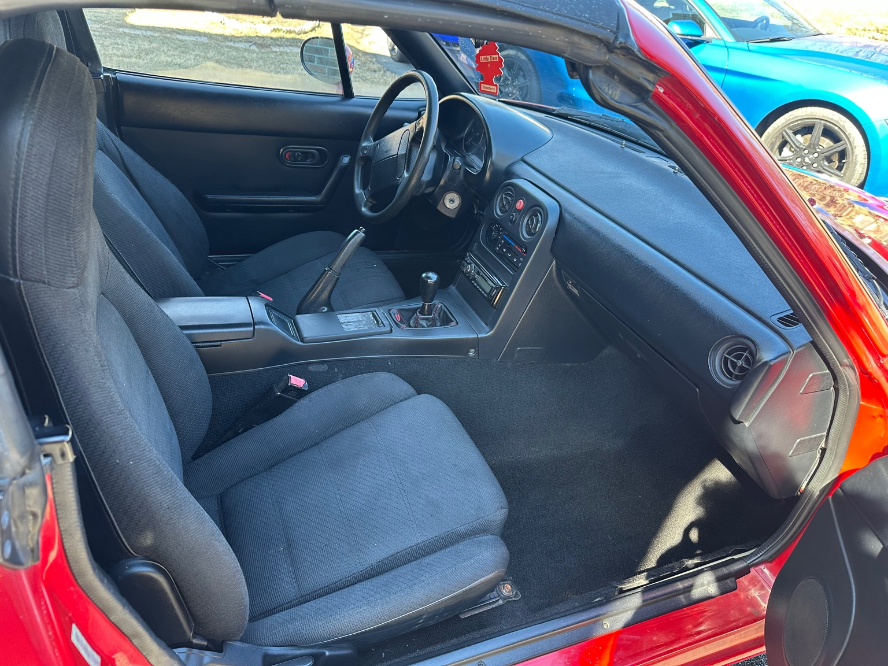
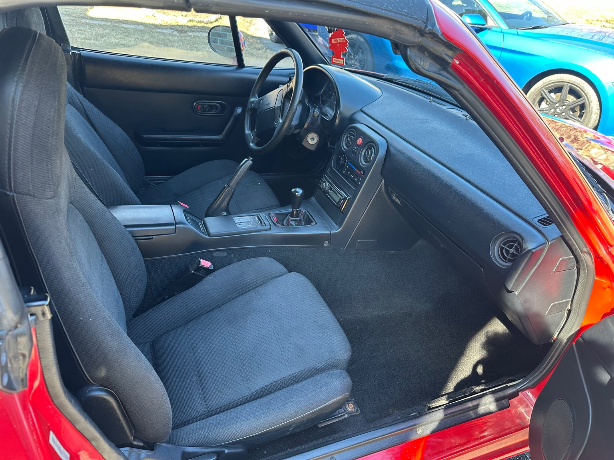

Day 1 — foggy headlights, oxidized paint, stock everything. A solid base though.

Valve cover off, coolant drained, tools scattered. chaos. Also original engine bay and polished up


OZ wheels on, aligned, and aired up. Ready for a proper test drive.


After full DA polish, wax, and plastic restore. Night and day transformation.
 

Funny Miscellenaous pictures. With my daily, cleaned up. Doggo appearance.
Halloween stabby Grimm reaper and Christmas elf kidnapping Mwuahaha. Baby Car guest appearance.

Miata drawing
Reflections & Stories
Restoring this Miata wasn’t just a checklist of parts and tools. It was late nights after class, learning by failing, Car Bros Derwood apprenticeship and occasionally just standing in the garage staring at it like "damn, I'm actually doing this."
The test drive after installing the wheels and brakes? Absolute joy. The brakes didn’t squeak, the alignment was solid, and for the first time the car felt like something I built, not just fixed. There’s nothing quite like hearing your own engine idle smooth and not exploding into emminent destruction (RIP insurance payout). I love my Mazda MX-5 Miata and will soon be back on the road.
TL;DR: Worth every busted knuckle and scraped elbow.
I will race you next semester ;p You know who you are XD